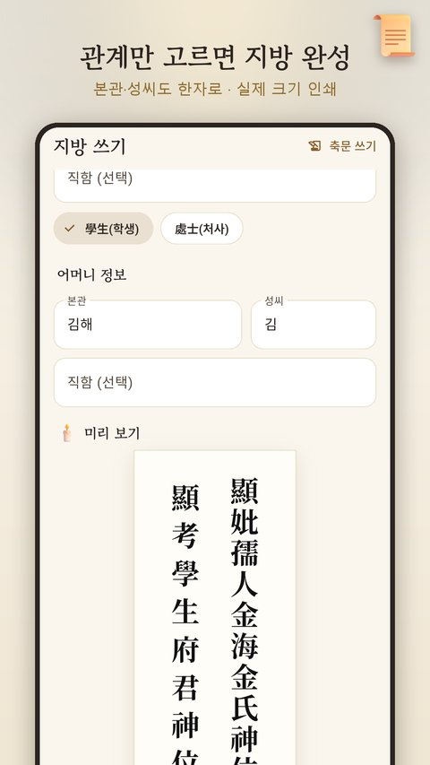
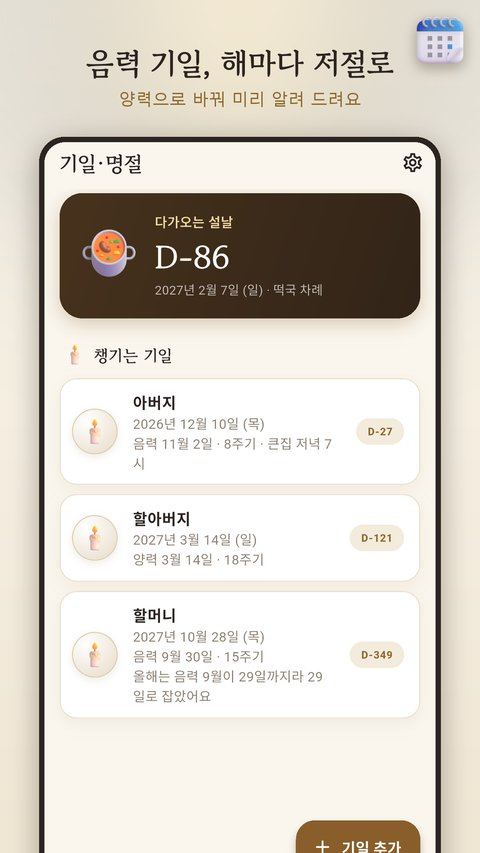
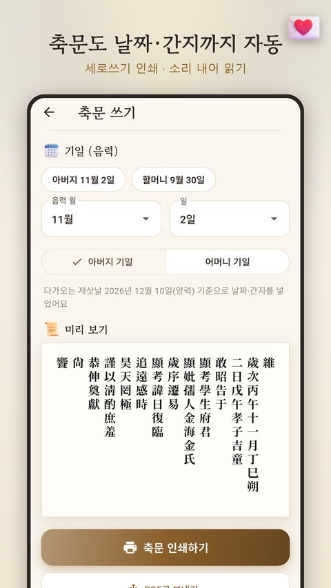

지방 쓰는 법, 관계별 지방 서식표와 자주 틀리는 부분
지방(紙榜)은 제사나 차례를 지낼 때 조상의 자리를 대신하는 종이 신위입니다. 일 년에 몇 번 쓰지 않으니 매번 쓰는 법이 헷갈리기 마련입니다. 아래 표에서 모실 분을 찾아 그대로 옮겨 쓰시면 됩니다.
지방은 네 부분으로 이루어집니다
어느 분의 지방이든 짜임은 같습니다. ① 높임말 → ② 관계 → ③ 직함 → ④ 신위 순서입니다.
| 부분 | 남자 조상 | 여자 조상 |
|---|---|---|
| ① 높임말 | 顯(현) | 顯(현) |
| ② 관계 | 考(고) = 아버지 | 妣(비) = 어머니 |
| ③ 직함 | 學生(학생) … 府君(부군) | 孺人(유인) + 본관·성씨 |
| ④ 끝 | 神位(신위) | 神位(신위) |
여자 조상은 직함 뒤에 본관과 성씨를 넣는다는 점만 기억하면, 나머지는 관계 글자만 바꾸면 됩니다.
관계별 지방 서식표
여자 조상의 ○○○氏 자리에는 본관과 성씨를 씁니다. 예) 김해 김씨 → 金海金氏
| 모실 분 | 지방 |
|---|---|
| 아버지 | 顯考學生府君神位 |
| 어머니 | 顯妣孺人○○○氏神位 |
| 할아버지 | 顯祖考學生府君神位 |
| 할머니 | 顯祖妣孺人○○○氏神位 |
| 증조할아버지 | 顯曾祖考學生府君神位 |
| 증조할머니 | 顯曾祖妣孺人○○○氏神位 |
| 외할아버지 | 顯外祖考學生府君神位 |
| 외할머니 | 顯外祖妣孺人○○○氏神位 |
| 장인 | 顯外舅學生府君神位 |
| 장모 | 顯外姑孺人○○○氏神位 |
| 남편 | 顯辟學生府君神位 |
| 아내 | 亡室孺人○○○氏神位 |
※ 널리 쓰는 서식입니다. 집안이나 지역마다 조금씩 다르게 쓰기도 하니 어른들의 방식이 있다면 그것을 따르세요.
자주 묻는 질문
지방 크기는 얼마나 되나요?
흔히 흰 종이에 가로 6cm, 세로 22cm 정도로 만듭니다. 위쪽을 둥글게 오리기도 하지만, 반듯하게 잘라도 괜찮습니다.
부모님 두 분을 함께 모실 때는 어떻게 쓰나요?
한 장에 두 줄로 나란히 씁니다. 보는 사람 기준으로 왼쪽이 아버지, 오른쪽이 어머니입니다. 두 장으로 따로 써서 같은 순서로 붙여도 됩니다.
학생(學生)과 처사(處士)는 무엇이 다른가요?
둘 다 벼슬을 하지 않은 분을 가리키는 말입니다. 대부분의 집에서 학생을 쓰고, 일부 집안에서는 처사를 씁니다. 고인이 공직이나 직함이 있었다면 그 이름을 넣어 쓰기도 합니다.
아내나 동생은 왜 顯이 아니라 亡으로 시작하나요?
顯은 윗사람을 높이는 말이라, 아내나 동생처럼 나보다 아래이거나 같은 항렬인 분에게는 亡(망)을 씁니다. 남편은 높여 顯辟(현벽)이라고 씁니다.
한글로 써도 되나요?
됩니다. "아버님 신위", "어머님 신위"처럼 한글로 쓰는 집도 많아졌고, 정성이 담겨 있다면 형식보다 마음이 중요하다는 의견이 많습니다.
다 쓴 지방은 어떻게 하나요?
제사나 차례를 마친 뒤 정중하게 태웁니다. 아파트처럼 태우기 어려운 곳에서는 깨끗한 종이에 싸서 따로 버리기도 합니다.
한자를 따라 쓰기 어렵다면
잘 쓰지 않는 한자를 붓펜으로 따라 쓰다 보면 획을 틀리기 쉽습니다. 그래서 퇴근후랩은 관계만 고르면 지방을 완성해 주는 앱 지방 쓰기를 만들었습니다.

- 24가지 관계에서 고르면 위 서식대로 지방을 만들어 줍니다. 본관·성씨는 한글로 넣으면 한자로 바뀝니다.
- 가로 6cm·세로 22cm 실제 크기로 인쇄하고, PDF로 받아 편의점에서 뽑을 수도 있습니다.
- 설·추석·기제사·간소화 차례상 차림표를 그림으로 보여 주고, 우리 집 방식으로 고쳐 가족에게 보낼 수 있습니다.
- 음력 기일을 적어 두면 해마다 양력 날짜로 바꿔 미리 알려 줍니다.
- 부모님·조부모님 기제사 축문을 날짜와 간지까지 채워 만들어 줍니다.


다가오는 설날은 2027년 2월 7일(일)입니다. 미리 기일과 명절을 챙겨 두면 당일 아침이 한결 여유롭습니다.